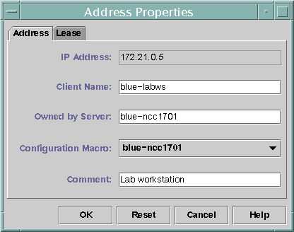
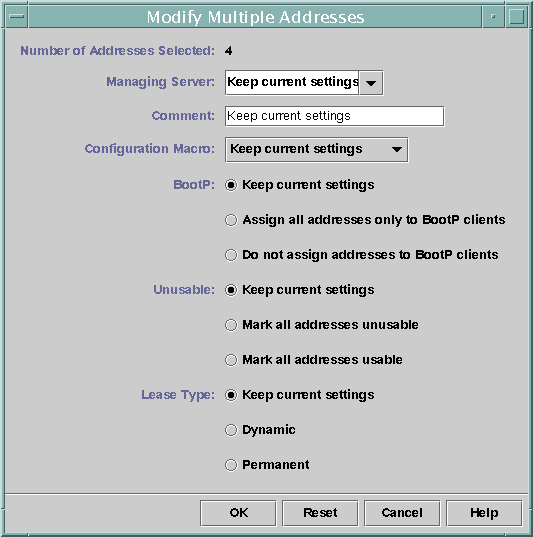

Previous
Previous
 How to Duplicate an Existing IP Address
(DHCP Manager)
How to Duplicate an Existing IP Address
(DHCP Manager)
In DHCP Manager, select the Addresses tab.
See How to Start and Stop DHCP Manager for information about DHCP Manager.
Select the network where the new IP address is located.
Select the address with properties that you want to duplicate.
Choose Duplicate from the Edit menu.
Specify the new IP address in the IP Address field.
(Optional) Specify a new client name for the address.
You cannot use the same name that is used by the address that you are duplicating.
(Optional) Modify other option values, if necessary.
Most other option values should remain the same.
Click OK.
How to Add Multiple IP Addresses (DHCP
Manager)
In DHCP Manager, select the Addresses tab.
See How to Start and Stop DHCP Manager for information about DHCP Manager.
Select the network where the new IP addresses are to be added.
Choose Address Wizard from the Edit menu.
The Add Addresses to Network dialog box prompts you to provide values for the IP address properties. See Table 15-4 for more information about the properties, or select the Help button in the dialog box. Making Decisions for IP Address Management (Task Map) includes more extensive information.
Click the right arrow button as you finish each screen, and click Finish on the last screen.
The Addresses tab is updated with the new addresses.
How to Add IP Addresses (pntadm)
Become superuser or assume a role or user name that is assigned to the DHCP Management profile.
For more information about the DHCP Management profile, see Setting Up User Access to DHCP Commands.
Roles contain authorizations and privileged commands. For more information about roles, see "Configuring RBAC (Task Map)" in System Administration Guide: Security Services.
Add IP addresses by typing a command of the following format:
# pntadm -A ip-address options network-address
Refer to the pntadm(1M) man page for a list of options you can use with pntadm -A. In addition, Table 15-4 shows some sample pntadm commands that specify options.
Note - You can write a script to add multiple addresses with pntadm. See Example 18-1 for an example.
Modifying IP Addresses in the DHCP Service
You can modify any of the address properties described in Table 15-4 by using DHCP Manager or the pntadm -M command. See the pntadm(1M) man page for more information about pntadm -M.
The following figure shows the Address Properties dialog box that you use to modify IP address properties.
Figure 15-10 Address Properties Dialog Box in DHCP Manager
The following figure shows the Modify Multiple Addresses dialog box that you use to modify multiple IP addresses.
Figure 15-11 Modify Multiple Addresses Dialog Box in DHCP Manager
How to Modify IP Address Properties (DHCP
Manager)
In DHCP Manager, select the Addresses tab.
See How to Start and Stop DHCP Manager for information about DHCP Manager.
Select the IP address's network.
Select one or more IP addresses to modify.
If you want to modify more than one address, press the Control key while you click with the mouse to select multiple addresses. You can also press the Shift key while you click to select a block of addresses.
Choose Properties from the Edit menu.
The Address Properties dialog box or the Modify Multiple Address dialog box opens.
Change the appropriate properties.
Click the Help button, or refer to Table 15-4 for information about the properties.
Click OK.
How to Modify IP Address Properties (pntadm)
Become superuser or assume a role or user name that is assigned to the DHCP Management profile.
For more information about the DHCP Management profile, see Setting Up User Access to DHCP Commands.
Roles contain authorizations and privileged commands. For more information about roles, see "Configuring RBAC (Task Map)" in System Administration Guide: Security Services.
Modify IP address properties by typing a command of the following format:
# pntadm -M ip-address options network-address
Many options can be used with the pntadm command, which are documented in the pntadm(1M) man page.
Table 15-4 shows some sample pntadm commands that specify options.
Removing IP Addresses From the DHCP Service
At times, you might want the DHCP service to stop managing a particular IP address or group of addresses. The method that you use to remove an address from DHCP depends on whether you want the change to be temporary or permanent.
To temporarily prevent the use of addresses, you can mark the addresses as unusable in the Address Properties dialog box as described in Marking IP Addresses as Unusable by the DHCP Service.
To permanently prevent the use of addresses by DHCP clients, delete the addresses from the DHCP network tables, as described in Deleting IP Addresses From the DHCP Service.